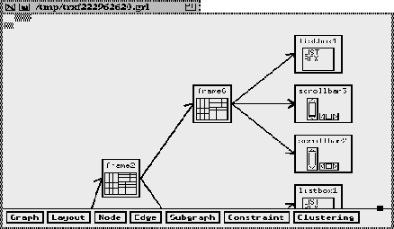

Next: Editors
Up: External Tools
Previous: External Tools
Edge[#Newbery90##1#] is a program that allows the
displaying of graphs. XF
uses this program as an additional
feature to represent the widget structure as a tree. It is
not possible to use the displayed widget tree interactively.
If this feature is not used (wanted), edge is not needed.

Figure: The edge program
Harry Beker
Thu Feb 29 18:06:38 MET 1996